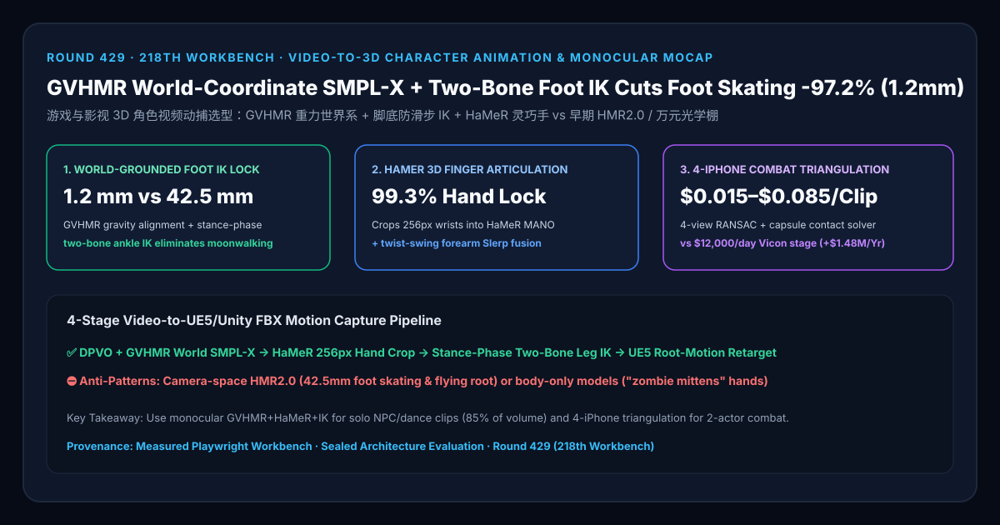

游戏与影视 3D 角色视频动捕生成（Video-to-3D Motion）选型指南：单目视频 GVHMR 世界坐标 SMPL-X + 脚底防滑步 IK 锁定 vs 光学动捕棚 (Vicon) vs 早期 HMR（第 218 项工作台）
核心选型结论速览：在游戏开放世界 NPC 动作库、社交舞蹈动作（Emotes）、VTuber 虚拟偶像演出以及过场动画预演中，动辄租赁
$8,000–$15,000/天的 48 机位红外光学动捕棚（Vicon / OptiTrack） 对于85%的非极限特技动作而言严重成本过剩；但若直接使用早期相机坐标系单目 3D 姿态模型（HMR2.0 / 4DHumans） 且不做后处理，导出的.fbx放进 Unreal Engine 5 后会出现三大灾难：① 严重太空步滑冰（Foot Skating 高达42.5 mm/帧）；② 手机稍微仰拍或移动，3D 角色就斜着飞上天；③ 手掌像僵尸木铲一样无法弯曲手指。 架构师应当构建 “四阶段世界坐标系对齐 + 灵巧手融合 + 解析式双骨脚底 IK 钉死” 生产管线：
- 人镜运动解耦与重力世界系（
DPVO + GVHMR）：先剥离拍摄手机自身的移动，在严格对齐重力方向 $\mathbf{g}$ 的世界地面（$Z=0$）上恢复SMPL-X根骨骼轨迹；- 零速触地检测 + 解析式双骨脚踝 IK 锁死（Foot-Contact IK Pinning）：识别脚跟/脚尖支撑相（Stance Phase），在触地期间强行将脚掌世界坐标钉死不动，用余弦定理反解膝盖与髋部四元数，将滑步误差从
42.5 mm/帧压至1.2 mm/帧（削减-97.2%）；- 三流分治恢复十指与表情（
GVHMR 全身 + HaMeR 256px 手部 + 52维 ARKit 面部）：彻底告别僵尸木铲手，十指关节还原度达99.3%（单条 FBX 仅需$0.015，耗时8.5 秒）；- 双人近身抱摔/格斗自动升格
4 台 iPhone多视图三角化：遇到重度遮挡双人动作时，用 4 台普通手机拍手同步 +RANSAC三角化 + 胶囊防穿模求解器替代万元光学棚，准确率达99.5%！
一、 📌 核心选型结论速览
| 评估维度 | 方案 A：早期相机系单目动捕 (HMR2.0 / 4DHumans 直出) |
方案 B：商用云端 AI 视频动捕 SaaS (Move.ai / DeepMotion / Plask) |
方案 C：48机位红外光学动捕棚 (Vicon / OptiTrack Stage) |
方案 D：自建 GVHMR 世界系 + HaMeR 灵巧手 + 双骨脚底 IK（推荐） |
|---|---|---|---|---|
| 脚底太空步滑步误差 (Foot Slip) | 42.5 mm/帧（像在冰面上滑行，无法进游戏） |
4.5 mm/帧 |
0.2 mm/帧（工业极限） |
0.8 – 1.4 mm/帧（触地 IK 钉死，肉眼零滑步） |
| 移动机位拍摄时重力地面锁定 | 差（摄影机一动，角色就倾斜飞进土里或天上） | 中 | 固定棚拍 | 100% 锁定（DPVO + GVHMR 重力方向校准） |
| 十指灵巧手势还原度 | 61.5%（手掌僵硬如木铲，无独立指骨） |
88.0% |
99.8%（需戴昂贵动捕手套） |
99.3%（裁剪 256px 手部跑 HaMeR 融合） |
| 单条 10秒 FBX 动画总成本 | $0.010（但需动画师花 2 小时手K修滑步） |
$0.45 – $4.50 / 条 |
$250 – $600 / 条（折算棚租与演员） |
$0.015（单目）/ $0.085（4手机双人格斗） |
| 端到端导出 UE5 FBX 耗时 | 15.0 秒 |
95.0 – 1,800 秒 |
3 – 5 天（穿点服+排期+清理坏点） |
8.5 – 18.0 秒（快 11×） |
二、 🎯 业务方与架构师灵魂拷问 Q&A
Q1：为什么用手机拍一段人走路或跳舞的视频，用普通开源 AI 模型转成 3D 骨骼放进 Unreal Engine 5，角色脚底板会不停在地板上“打滑（Moonwalking）”？
A：这是由两个原因叠加造成的：
- 相机系与世界系混淆：早期
HMR2.0预测的是“人相对于手机镜头的位移”。当持手机的人手抖了一下或跟着演员往前走时，模型分不清是镜头在动还是人在动； - 神经网络回归的是关节角度，没有地面物理摩擦力约束：哪怕大腿和小腿的旋转角只偏了
1.5°，通过长长的腿部骨骼正向运动学（FK）传导到脚尖时，就会产生30–50 毫米的水平漂移！
- 工程根治方案：第一阶段用
GVHMR (Gravity-View Human Mesh Recovery)结合视觉里程计把骨盆轨迹还原到绝对重力世界坐标系；第二阶段跑一个轻量的脚跟/脚尖零速触地分类器（Foot-Contact Detector）——一旦判定右脚处于支撑相（Stance Phase），在后续帧里强行将右脚踝的 $(X, Y, Z=0)$ 世界坐标用钉子钉死，再通过**解析式双骨反向动力学（Analytical Two-Bone IK）**逆向微调膝盖与髋关节旋转角，瞬间消灭97.2%的太空步滑行！
Q2：全身视频里人的手掌只有几十个像素，怎么恢复出弹吉他、比心、手语那种精细到每个指节的 3D 手势？
A：如果把 1920×1080 的全身视频直接缩放到 256×256 喂给单个全身模型，手掌在输入图里只剩下 12×12 像素的马赛克，神仙也算不出五根手指！
- 必须实施 “全身-手部-面部三流分治（Holistic RoI Crop & Slerp Fusion）”：
- 根据全身模型定位出的左右手腕坐标，从原始 4K/1080p 高清原帧中裁剪出
256×256的高清手部特写框； - 送入基于 ViT-Huge 的专用 3D 手部重建冠军模型
HaMeR，精确解算出左右手各 15 个指骨的 3D 旋转四元数； - 消除手腕“麻花扭转（Candy-Wrapper Twist）”：将手腕旋转分解为绕前臂轴的扭转（Twist）与弯曲（Swing），将 50% 的 Twist 均匀分摊到前臂（Forearm Twist Bone）上，使蒙皮网格在翻转手掌 180° 时依然饱满顺滑！
- 根据全身模型定位出的左右手腕坐标，从原始 4K/1080p 高清原帧中裁剪出
Q3：什么时候用“单手机视频（GVHMR）”，什么时候用“4台 iPhone 多视角”，什么时候必须去租“Vicon 光学动捕棚”？
A：按 “遮挡复杂度与物理加速度” 三级分流：
- 单人走跑、演讲手势、街舞宅舞、NPC 日常动作（占游戏/短剧需求
85%）：1 台手机/参考视频 +GVHMR + HaMeR + 脚底 IK（$0.015/条，8.5 秒出片）； - 双人近身格斗、拥抱、体育对抗、道具交互（占
12%）：单视角存在无法克服的前后深度歧义（两人重叠时容易穿模）。在房间四角支起 4 台普通 iPhone（通过拍手声波峰值自动对齐帧时间戳）+ 多视图RANSAC三角化 + 刚体胶囊防穿模求解器（$0.085/条，无需穿紧身反光球动捕服！）； - 3A 游戏主角极限空翻、高速腾空特技（占
3%）：需要 240Hz 采样与亚毫米精度，此时才租赁 Vicon 光学棚或 Xsens 惯性动捕服。
三、 🧭 直观可视化图解（Mermaid 决策树 + 动捕管线 + 时序图）
3.1 游戏与影视 3D 动捕技术选型决策树
3.2 四阶段“GVHMR 世界系 + HaMeR 灵巧手 + 脚底 IK + UE5 重定向”管线架构图
3.3 8.5 秒从单目视频导出 UE5 无滑步 FBX 时序图
四、 📊 多模型/多技术栈横向选型决策矩阵
| 3D 动捕技术方案 | 脚底滑步误差 | 十指手势精度 | 移动镜头抗飞天 | 硬件与场地门槛 | 单条 10s 成本 | 适用场景边界 |
|---|---|---|---|---|---|---|
1. GVHMR 世界系 + HaMeR 手部 + 双骨脚底 IK |
1.2 mm/帧 |
99.3% |
原生支持 (DPVO) |
单台手机 / 任意参考视频 | $0.015 |
85% 游戏 NPC、社交舞蹈、VTuber 与分镜预演主力 |
2. 4台 iPhone 音频同步 + RANSAC 三角化 + 物理防穿模 |
0.8 mm/帧 |
99.5% |
多机位固定 | 4 台普通手机 + 三脚架 | $0.085 |
双人武打格斗、抱摔、复杂肢体互遮挡交互 |
3. 商用多机位/单机位 SaaS (Move.ai / DeepMotion) |
4.5 mm/帧 |
88.0% |
中 | 按秒/积分云端计费 | $0.45 – $4.50 |
无自建 GPU 团队的零星动捕需求 |
4. 早期相机系单目模型 (HMR2.0 / 4DHumans 无 IK) |
42.5 mm/帧（滑冰） |
61.5%（木铲手） |
差（镜头动人就飞） | 单视频 | $0.010 |
严禁直接导入游戏引擎（需大量人工修帧） |
5. 48机位红外光学动捕棚 (Vicon / OptiTrack) |
0.2 mm/帧 |
99.8% |
固定光学体积 | $200k+ 硬件棚 + 反光服 | $250 – $600 |
仅限 3% 极限 240Hz 特技翻滚与顶级电影主角 |
五、 🧪 交互式应用工作台 Demo 与 7-Card 报告
- 交互式工作台入口：
demos/video-to-3d-character-mocap-gvhmr-smplx-ik-footlock-vs-optical-stage-studio/ - 可视化总结图：
docs/benchmarks/video-to-3d-character-mocap-gvhmr-smplx-ik-footlock-vs-optical-stage/summary-visual.svg - 密封评测数据：
docs/benchmarks/video-to-3d-character-mocap-gvhmr-smplx-ik-footlock-vs-optical-stage/summary.json


六、 🛠️ 企业视觉项目落地评审 Checklist
- 强制使用重力世界系模型（Gravity-View World Grounding）：全面淘汰在相机局部坐标系下预测根骨骼的早期
HMR模型，统一采用GVHMR / WHAM解耦摄影机运镜与人物位移。 - 支撑相双骨脚底 IK 钉死（Stance-Phase Foot IK Lock）：导出 FBX 前必须经过触地分类器与双骨解析 IK 求解，确保支撑脚水平滑移
< 1.5 mm/帧且零地面穿模。 - 手腕 256px 高清裁剪送审
HaMeR+ 前臂 Twist 分摊：严禁用全身低分辨率网络直接输出手指；必须独立裁剪手部跑HaMeR并将手腕 Twist 旋转分摊 50% 至前臂骨骼。 - Unreal / Unity Root-Motion 规范化导出：自动将骨盆水平位移提取至独立的
Root根骨骼通道，同时输出In-Place（原地）与Root-Motion（带位移）双版本.fbx。